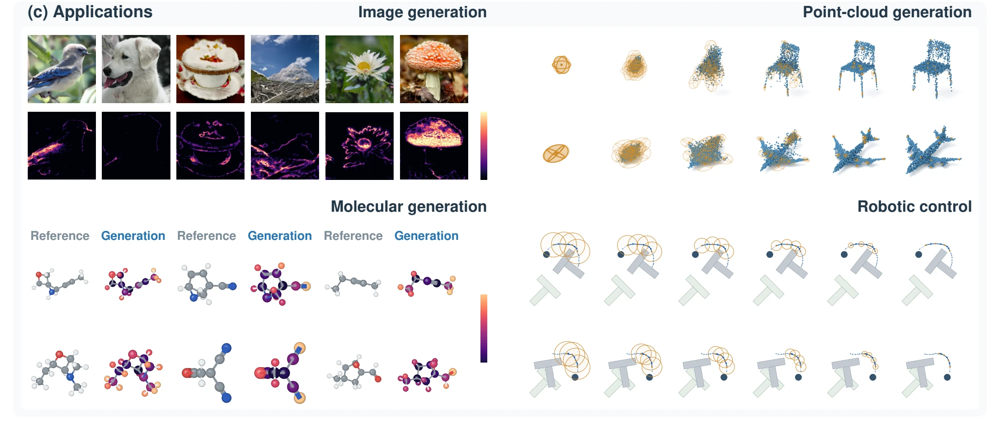
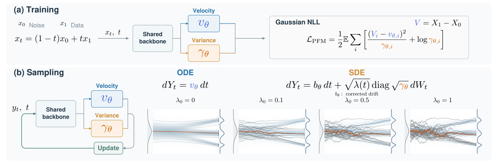
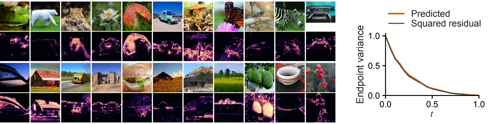
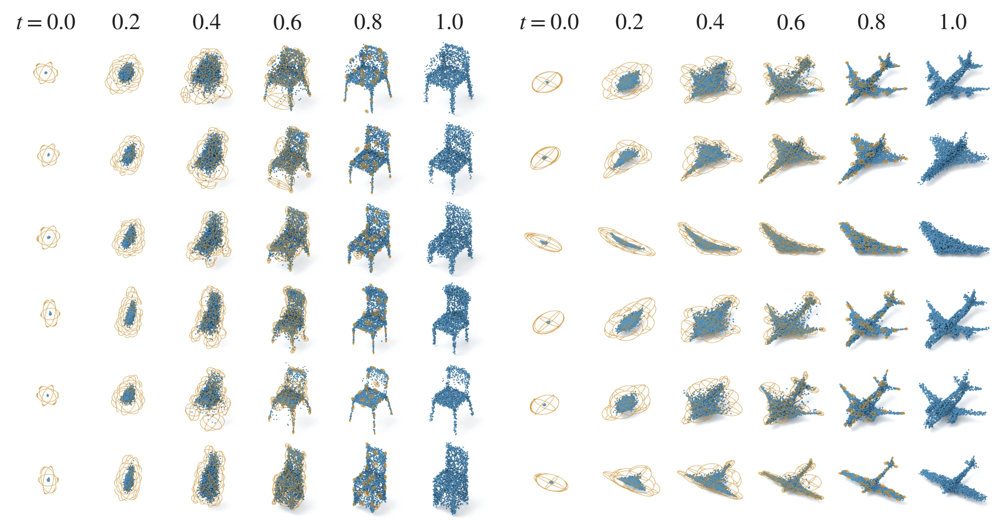
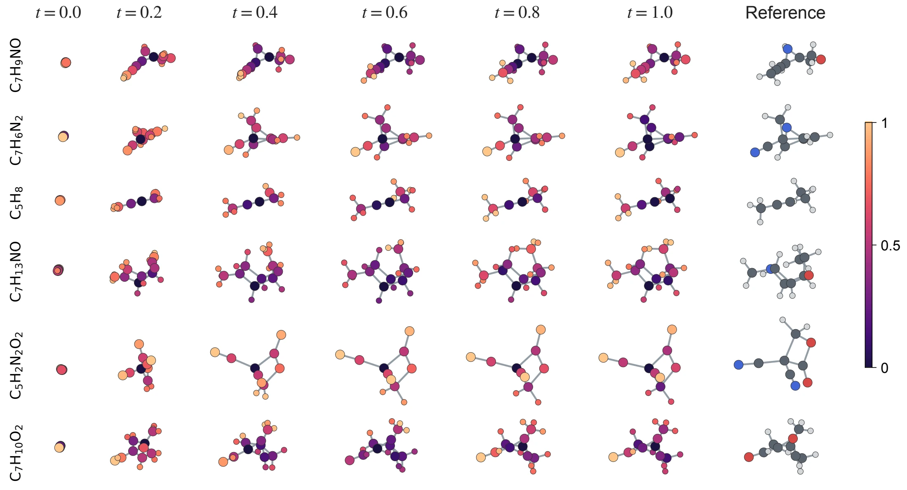
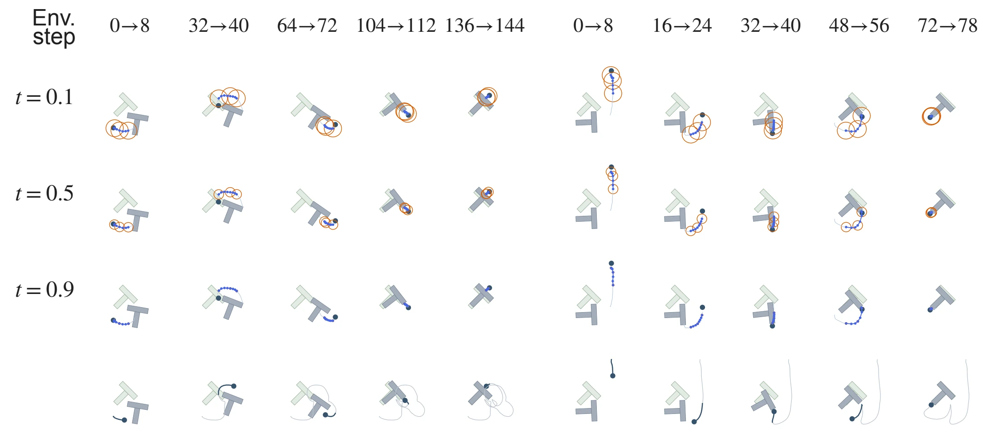
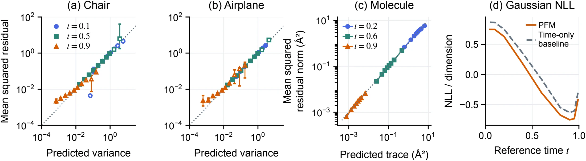
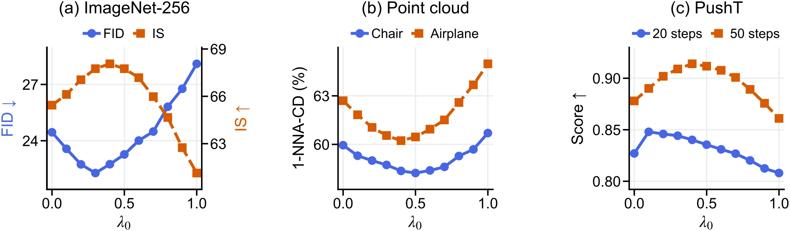

Learn conditional moments
A diagonal Gaussian fits the conditional velocity mean vθ and variances γθ = exp ℓθ. Fixing covariance to the identity recovers the FM regression objective.
Research preprint · 2026
Learning conditional velocity means and variances
for generation and endpoint uncertainty.
1 University of Virginia2 University of Alabama at Birmingham3 Northeastern University4 University of California, Irvine

The motivation
At an intermediate state, several noise–data pairs can be compatible with the same input, each prescribing a different velocity toward its data endpoint. Flow matching learns their conditional mean, which supplies a transport direction but leaves the spread of compatible endpoints unspecified.
Posterior Flow Matching (PFM) learns that mean together with componentwise variance through a Gaussian posterior model. The same learned moments provide endpoint-posterior readouts and support both a mean-driven ordinary differential equation (ODE) and a posterior-driven stochastic differential equation (SDE). The experiments examine generation quality, the information in these readouts, and the role of posterior covariance in sampling.
01 / Method
A shared backbone predicts a mean and log variance. One negative log-likelihood (NLL) objective connects the transport field to endpoint uncertainty.
Independent standard Gaussian noise X0 ∼ 𝒩(0, I) and data X1 ∼ pdata define the reference path Xt = (1 − t)X0 + tX1, with velocity target V = X1 − X0. Generation time increases from noise at t = 0 toward data at t = 1.
A diagonal Gaussian fits the conditional velocity mean vθ and variances γθ = exp ℓθ. Fixing covariance to the identity recovers the FM regression objective.
An affine map converts velocity moments into the endpoint mean μθ and covariance Σθx, with no additional prediction head.
The mean supplies transport. The SDE allocates noise through learned covariance and includes the score and divergence corrections needed by the full dynamics.

Posterior learning
qθ(v | x, t) = 𝒩(v; vθ, Σθ), Σθ = diag γθ
ℒPFM = ½ 𝔼 [ ∑i ( (Vi − vθ,i)2 / γθ,i + log γθ,i ) ]
The expectation uses the reference pairs and training time law. For unrestricted means and positive diagonal variances, the population optimum recovers the conditional velocity mean and componentwise variances under the paper's moment assumptions.
Endpoint readouts at (x, t)
μθ = x + (1 − t)vθ
Σθx = (1 − t)2Σθ
These readouts describe the compatible data endpoints. They are distinct from the SDE's injected noise and from downstream execution error. The ImageNet model predicts the endpoint mean directly, using the equivalent parameterization in the paper.
For the standard Gaussian reference noise and t < 1, the velocity mean also gives a derived score. The nonnegative schedule λ controls the overall diffusion rate; the learned covariance sets its relative strength across states and coordinates.
dYt = vθ dt, ŝθ = (tvθ − x) / (1 − t)
aθ = λ(t)Σθ, BθBθ⊤ = aθ
dYt = [vθ + ½ ∇x · aθ + ½ aθ ŝθ] dt + Bθ dWt
Fields in the dynamics are evaluated at (Yt, t), and Wt is Brownian motion. The score term compensates for diffusion across density gradients; the divergence term accounts for spatially varying covariance. Setting λ = 0 recovers the ODE.
With exact fields, matching initialization Y0 ∼ 𝒩(0, I), and the regularity conditions stated in the paper, both dynamics preserve the reference marginals. Under the same compatible coefficients, the SDE dissipates relative entropy of density perturbations, whereas the ODE preserves it. These continuous-time statements do not imply exact learned fields or error-free numerical sampling.
02 / Generation across domains
Task-specific baselines test generation quality. Within each task and category, PFM ODE and PFM SDE share the trained posterior model. The tables and figures below report the paper's experiments.
ImageNet-256 · CIFAR-10
Class-conditioned image generation tests whether posterior-driven sampling improves Fréchet inception distance (FID) and inception score (IS) relative to mean-driven transport and the listed FM and diffusion baselines.
| Method | FID ↓ | IS ↑ |
|---|---|---|
| FM | 25.42 | 63.2 |
| Diffusion | 27.38 | 62.1 |
| PFM ODE | 24.45 | 65.44 |
| PFM SDE | 22.28 | 68.06 |
| Method | FID ↓ |
|---|---|
| FM | 3.75 |
| Diffusion | 4.12 |
| PFM ODE | 3.49 |
| PFM SDE | 3.03 |
50,000 class-balanced samples per setting; 250 integration steps for ImageNet and 50 for CIFAR-10. Lower FID and higher IS are better. Tables scroll horizontally when needed.
PFM SDE lowers ImageNet FID from 24.45 to 22.28 and raises IS from 65.44 to 68.06 relative to PFM ODE. CIFAR-10 FID decreases from 3.49 to 3.03. The gains also hold against the baselines shown here.

ShapeNet · Chair & Airplane
A shape latent conditions point-cloud generation. Chamfer-distance (CD) metrics compare geometric matching, coverage, and the distinction between generated and reference distributions.
| Method | MMD ×10³ ↓ | COV (%) ↑ | 1-NNA (%) |
|---|---|---|---|
| Diffusion | 12.28 | 48.94 | 60.11 |
| FM | 12.04 | 49.23 | 61.74 |
| PFM ODE | 11.57 | 50.98 | 59.95 |
| PFM SDE | 10.50 | 51.58 | 58.23 |
| Method | MMD ×10³ ↓ | COV (%) ↑ | 1-NNA (%) |
|---|---|---|---|
| Diffusion | 3.28 | 48.71 | 64.83 |
| FM | 3.26 | 49.34 | 63.19 |
| PFM ODE | 3.23 | 50.13 | 62.70 |
| PFM SDE | 3.06 | 51.80 | 60.23 |
MMD is minimum matching distance, averaged from each reference shape to its nearest generated shape. COV is coverage. For 1-nearest-neighbor accuracy (1-NNA), the ideal value is 50%; bold marks the closest value. All metrics use CD. Swipe within a table to see every metric.
In both categories, PFM SDE lowers MMD, increases coverage, and moves 1-NNA closer to 50% relative to PFM ODE and the listed baselines. The improvements span geometric fidelity and distributional coverage.

GEOM-QM9 · Molecular conformations
Conditioned on molecular graphs, PFM generates atom coordinates with covariance projected onto the centered coordinate subspace. Recall and precision measure both reference coverage and generated-conformation quality.
| Method / sampler | COV-R (%) ↑ | COV-P (%) ↑ | MAT-R (Å) ↓ | MAT-P (Å) ↓ |
|---|---|---|---|---|
| FM (ET-Flow) / ODE | 96.47 | 94.05 | 0.073 | 0.098 |
| FM (ET-Flow–SO(3)) / ODE | 95.98 | 92.10 | 0.076 | 0.110 |
| PFM / ODE | 96.44 | 93.99 | 0.075 | 0.108 |
| PFM / SDE | 98.37 | 96.42 | 0.063 | 0.081 |
COV-R/P: recall/precision coverage; MAT-R/P: recall/precision matching distance. Coverage uses a 0.5 Å threshold. Performance metrics use chirality correction without force-field relaxation. Swipe within the table to see every metric.
PFM SDE improves all four reported metrics over PFM ODE and the listed reference methods: coverage rises to 98.37% / 96.42%, while matching distances fall to 0.063 / 0.081 Å.

PushT · Visuomotor control
PFM generates action sequences conditioned on observations. Comparing two integration budgets tests control performance when the sampler has a limited number of generation steps.
| Method | 20 steps ↑ | 50 steps ↑ |
|---|---|---|
| FM | 0.825 | 0.872 |
| Diffusion Policy | 0.823 | 0.867 |
| PFM ODE | 0.827 | 0.878 |
| PFM SDE | 0.848 | 0.914 |
Higher control scores are better. The 20/50-step columns refer to generation integration budgets, distinct from the environment steps in the figure. Tables scroll horizontally when needed.
PFM SDE improves control scores from 0.827 to 0.848 at 20 steps and from 0.878 to 0.914 at 50 steps, exceeding the listed FM and Diffusion Policy results at both budgets.

03 / Posterior diagnostics
The readout includes (1 − t)², so a shrinking variance alone does not establish calibration. The paper tests predicted moments against known endpoint residuals and compares covariance models at the same mean.
Reference states interpolate independent noise and held-out data endpoints at fixed times. This makes the endpoint residual observable. Grouped moment checks assess variance–residual agreement; molecular Gaussian NLL compares learned covariance with a time-only covariance fitted on validation data.

The moment checks show broad agreement, with departures in low-variance and sparse point-cloud bins. Learned molecular covariance gives lower Gaussian NLL at every evaluated time than the time-only baseline. These checks support the information in the learned covariance at the evaluated reference states.
04 / Ablation studies and sampling cost
The diffusion tensor has two parts: learned covariance sets local noise allocation, while the inference-time schedule controls its overall rate. Separate comparisons examine each role and the sampling cost.
All three samplers use the same trained PFM model. The two SDEs share the same scalar schedule: posterior-driven sampling uses aθ = λ(t)Σθ, while the isotropic alternative uses aiso = λ(t)I, with each sampler's corresponding drift correction. Molecular isotropy is defined within the centered coordinate subspace.
| Task / metric | PFM ODE | PFM + isotropic SDE | PFM SDE |
|---|---|---|---|
| ImageNet · FID ↓ | 24.45 | 24.31 | 22.28 |
| Chair · MMD-CD ×10³ ↓ | 11.57 | 11.46 | 10.50 |
| Airplane · MMD-CD ×10³ ↓ | 3.23 | 3.32 | 3.06 |
| GEOM-QM9 · COV-R (%) ↑ | 96.44 | 96.14 | 98.37 |
| PushT · 50-step score ↑ | 0.878 | 0.882 | 0.914 |
Selected metrics from the full covariance comparison below. This controls the mean model and scalar schedule, not the total injected noise energy. Swipe within a table to see every sampler.
Posterior-driven sampling improves the reported quality metrics over isotropic sampling across all four tasks. Isotropic noise alone gives smaller gains on ImageNet, Chair, and PushT, and worsens molecular coverage and Airplane MMD relative to PFM ODE.
| Sampler | FID ↓ | IS ↑ |
|---|---|---|
| PFM ODE | 24.45 | 65.44 |
| PFM + isotropic SDE | 24.31 | 65.53 |
| PFM SDE | 22.28 | 68.06 |
| Sampler | 20 steps ↑ | 50 steps ↑ |
|---|---|---|
| PFM ODE | 0.827 | 0.878 |
| PFM + isotropic SDE | 0.833 | 0.882 |
| PFM SDE | 0.848 | 0.914 |
| Sampler | MMD ×10³ ↓ | COV (%) ↑ | 1-NNA (%) |
|---|---|---|---|
| PFM ODE | 11.57 | 50.98 | 59.95 |
| PFM + isotropic SDE | 11.46 | 51.34 | 59.68 |
| PFM SDE | 10.50 | 51.58 | 58.23 |
| Sampler | MMD ×10³ ↓ | COV (%) ↑ | 1-NNA (%) |
|---|---|---|---|
| PFM ODE | 3.23 | 50.13 | 62.70 |
| PFM + isotropic SDE | 3.32 | 50.32 | 62.78 |
| PFM SDE | 3.06 | 51.80 | 60.23 |
ShapeNet metrics use CD; 1-NNA is best at 50%.
| Sampler | COV-R (%) ↑ | COV-P (%) ↑ | MAT-R (Å) ↓ | MAT-P (Å) ↓ |
|---|---|---|---|---|
| PFM ODE | 96.44 | 93.99 | 0.075 | 0.108 |
| PFM + isotropic SDE | 96.14 | 93.58 | 0.078 | 0.123 |
| PFM SDE | 98.37 | 96.42 | 0.063 | 0.081 |
Molecular coverage uses the same 0.5 Å threshold and correction protocol as the generation comparison. PFM ODE/SDE rows reproduce the main task tables.
With the learned covariance fixed, the sweep varies λ0 in λ(t) = λ0(1 − t). The drift correction scales with λ0, and the Brownian coefficient with its square root; zero recovers the ODE.

Intermediate scales improve quality relative to the ODE in the evaluated sweeps; larger scales can reduce it. The favorable range depends on the task and integration budget, including the two PushT budgets.
The same trained posterior model supports both choices. PFM ODE has sampling times close to FM ODE; the SDE additionally computes variance-field derivatives for its drift correction.
| Task | FM ODE | Diffusion SDE | PFM ODE | PFM SDE |
|---|---|---|---|---|
| ImageNet-256 | 3.43 | 3.78 | 3.42 | 3.98 |
| ShapeNet | 1.87 | 2.11 | 1.88 | 2.47 |
| GEOM-QM9 | 2.18 | 2.42 | 2.17 | 2.89 |
| PushT | 4.25 | 4.49 | 4.30 | 5.04 |
Milliseconds per generated sample, as reported in the paper. PushT timings use 50 integration steps. These measurements describe the evaluated workloads and hardware.
05 / Code & interfaces
One PFM repository contains four parallel task implementations: images, point clouds, molecules, and PushT. Each task directory provides its own setup, data instructions, training, ODE/SDE sampling, evaluation, and posterior diagnostics. Pretrained PFM checkpoints are not provided; example configurations do not promise the paper’s reported results.
The paper link opens the authors' preprint PDF. An arXiv link will be added when the submission is available.
Reference
@misc{ma2026posteriorflowmatching,
title = {Posterior Flow Matching},
author = {Chenrui Ma and Xi Xiao and Lin Zhao and Xinru Jiang and
Tianyang Wang and Yanning Shen and Nando Fioretto},
year = {2026},
note = {Preprint}
}